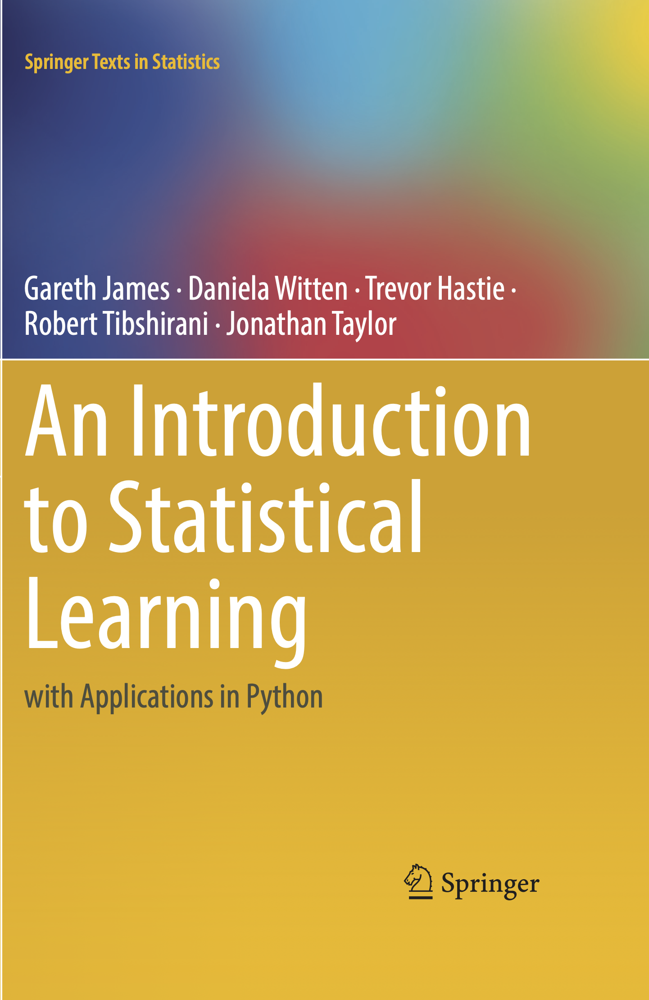
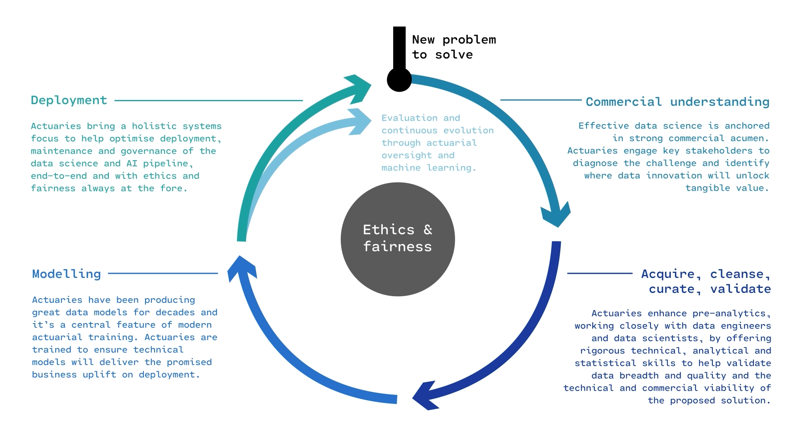
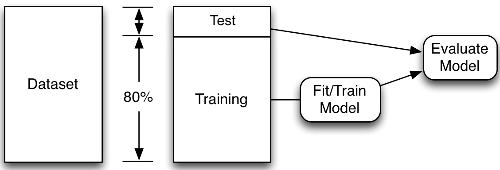
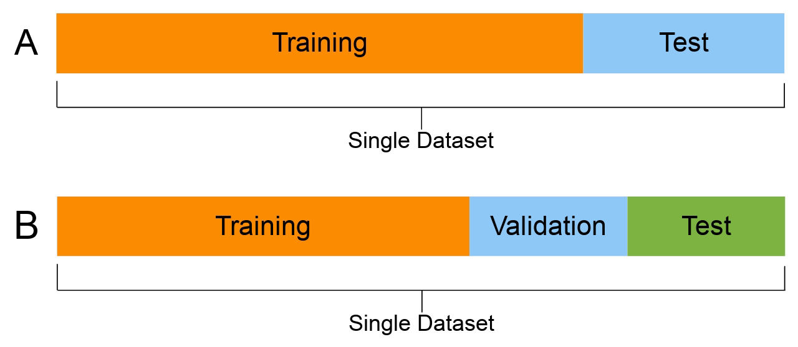
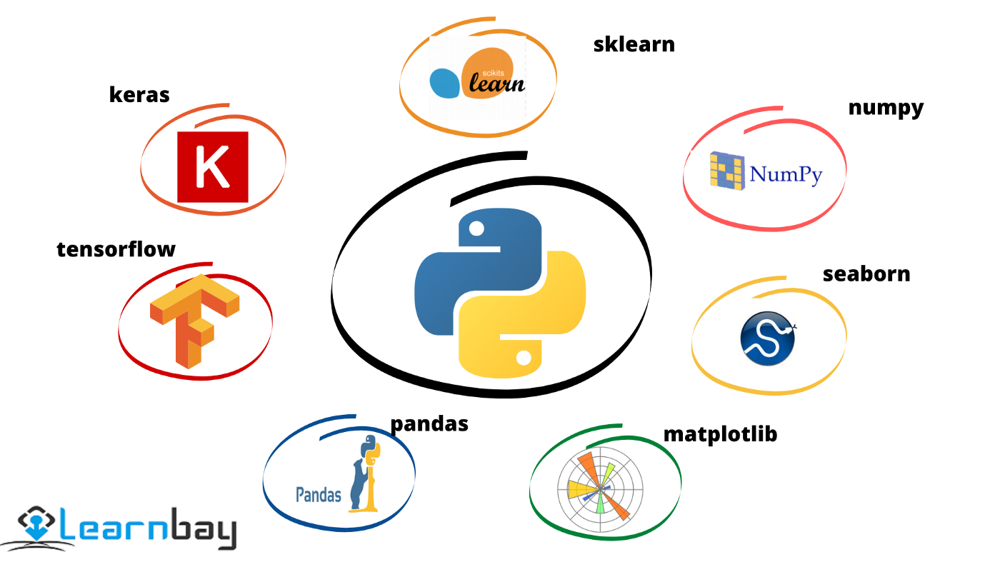
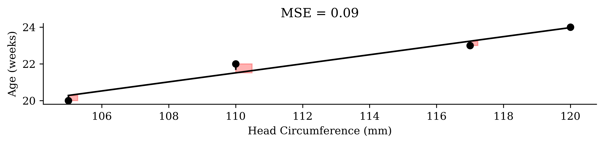
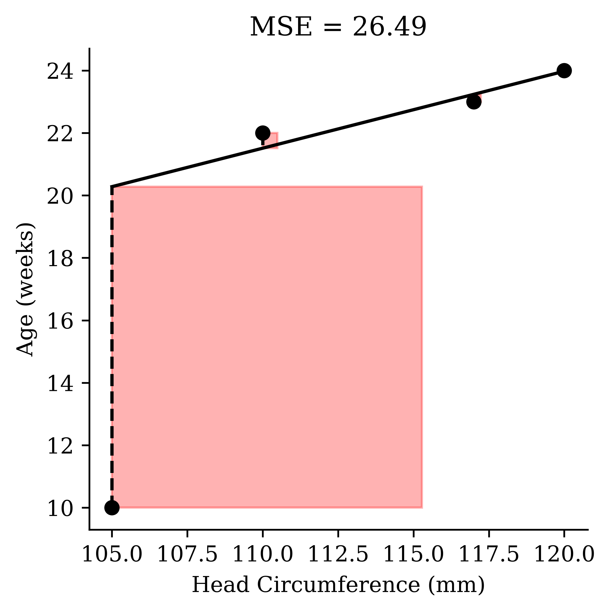
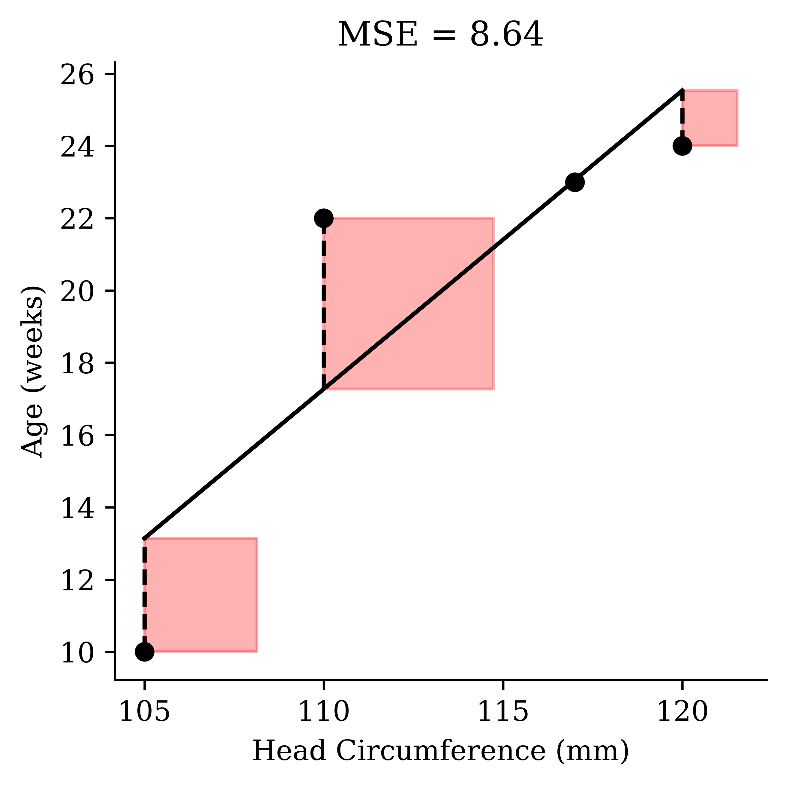
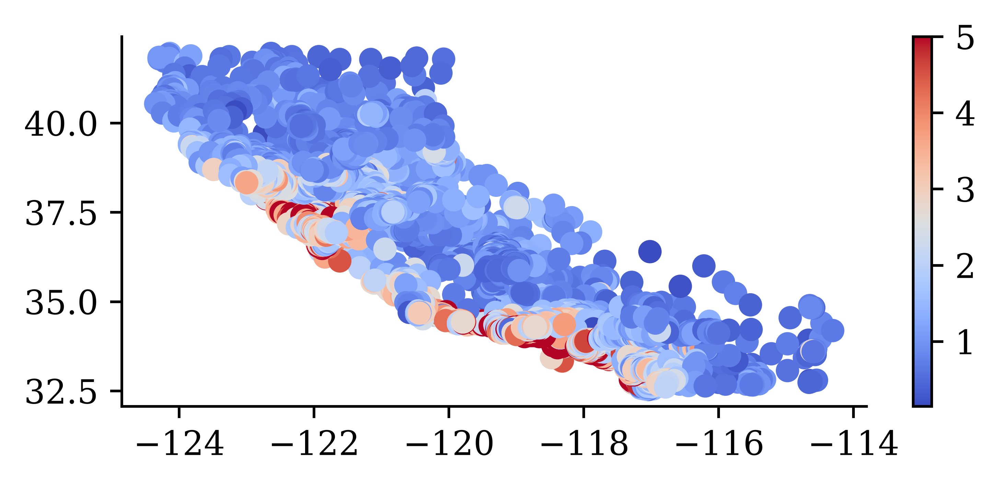
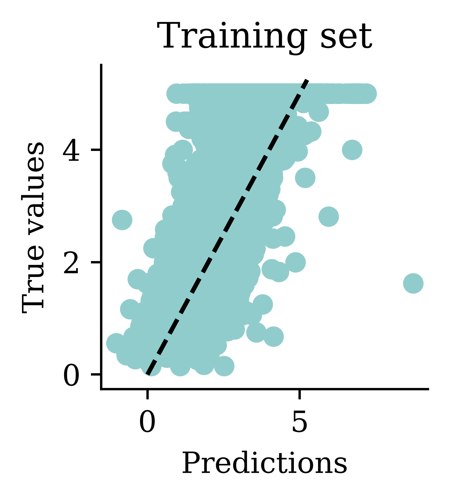

import numpy as np
import pandas as pd
import matplotlib.pyplot as plt
from sklearn.datasets import fetch_california_housing
from sklearn.linear_model import LinearRegression, LogisticRegression, PoissonRegressor
from sklearn.metrics import mean_squared_error
from sklearn.model_selection import train_test_split
from sklearn.preprocessing import StandardScaler
from sklearn.tree import DecisionTreeClassifier, plot_treePython for Data Science
ACTL3143 & ACTL5111 Deep Learning for Actuaries
Preliminary notes
Readings for this topic:
| Week | Readings (ACTL3142 Revision) |
|---|---|
| 1 | James et al. (2021): Chapter 2, Sections 3.1, 3.2, and 5.1.1 |
| 2 | James et al. (2021): Section 3.3.1, 4.1, 4.2, 4.3 |
For ACTL3143 students, these slides are mostly a revision of ACTL3142 concepts but using Python instead of R.
For ACTL5111 students, if you have not taken ACTL5110, you need to self-study any surprising concepts in these slides ASAP.

Machine Learning Workflow
An entire ML project

The course focuses more on the modelling part of the life cycle.
Questions to answer in ML project
You fit a few models to the training set, then ask:
- (Selection) Which of these models is the best?
- (Future Performance) How good should we expect the final model to be on unseen data?

Validation set approach

- For each model, fit it to the training set.
- Compute the error for each model on the validation set.
- Select the model with the lowest validation error.
- Compute the error of the final model on the test set.
Read Section 5.1.1 of James et al. (2021) for details.
You should have seen split A in your previous courses. In those courses, split A is used, and then cross-validation is performed to fit the hyperparameters. In the case of NNs, it is much more common to split the dataset into training, validation and test (split B).
Data Science Packages
Data science packages

Imports for these slides
For sklearn, you’ll need to pip install scikit-learn.
Numpy for matrices
Numpy is Python’s standard approach for any low-level numerical mathematics tasks (matrix processing, linear algebra)
a = np.array([1, 2, 3, 4])
a.mean(), a.std()(np.float64(2.5), np.float64(1.118033988749895))a * 2 + 1 # vectorised arithmeticarray([3, 5, 7, 9])M = np.arange(6).reshape(2, 3)
Marray([[0, 1, 2],
[3, 4, 5]])M.shape, M.sum(axis=0)((2, 3), array([3, 5, 7]))Pandas for DataFrames
Used for tabular data: loading, cleaning, processing, saving
df = pd.DataFrame({
"age": [25, 32, 41, 28, 36],
"salary": [45_000, 65_000, 80_000, 55_000, 72_000],
})
df.head()| age | salary | |
|---|---|---|
| 0 | 25 | 45000 |
| 1 | 32 | 65000 |
| 2 | 41 | 80000 |
| 3 | 28 | 55000 |
| 4 | 36 | 72000 |
Matplotlib for plots

{kind=link}
Scikit-learn for machine learning
Every sklearn estimator has the same three methods:
fit(X, y): learn the parameters of the modelpredict(X): apply the modelscore(X, y): apply the model and calculate a metric
X = df[["age"]] # [[ ]] gives a 2D DataFrame
y = df["salary"]
model = LinearRegression()
model.fit(X, y)
y_pred = model.predict(X)
print(f"R^2 = {model.score(X, y):.3f}")R^2 = 0.977Once you’ve learned this pattern for LinearRegression, you’ve largely learned it for every other model in scikit-learn — LogisticRegression, PoissonRegressor, DecisionTreeClassifier, RandomForestRegressor, and so on all use the same three methods.
Set aside a fraction for a test set
Off-screen I have loaded up a larger X & y dataset:
print(X.shape, y.shape)(10000, 4) (10000,)We can split into train and test sets (in a random but reproducible way):
X_train, X_test, y_train, y_test = train_test_split(X, y, random_state=42)
print(X_train.shape, X_test.shape, y_train.shape, y_test.shape)(7500, 4) (2500, 4) (7500,) (2500,)We set aside the test data, assuming it represents new, unseen data. Then we fit many models on the train data and select the one with the lowest train error. Thereafter we assess the performance of that model using the unseen test data.
Note: Compare X_/y_ names, capitals & lowercase.
Split three ways:
Using the same dataset for both validating and testing purposes can result in data leakage: the information from supposedly ‘unseen’ data is now used by the model during its training. This results in a situation where the model is now ‘learning’ from the test data, which could lead to overly optimistic results in the model evaluation stage. That is why it is important to split the data three ways.
- 1
- Splits the entire dataset into two parts. Sets aside 20\% of the data as the test set.
- 2
-
Splits the first 80\% of the data (
X_mainandy_main) further into train and validation sets. Sets aside 25\% as the validation set.
((6000, 4), (2000, 4), (2000, 4))This results in a 60:20:20 three-way split. While this is not a strict rule, it is widely used.
Linear Regression Recap
Single Linear Regression (SLR)
Scenario: use head circumference (mm) to predict age (weeks) of a fetal baby
\boldsymbol{x} = \begin{pmatrix} 105 \\ 120 \\ 110 \\ 117 \\ \end{pmatrix}, \quad \boldsymbol{y} = \begin{pmatrix} 20 \\ 24 \\ 22 \\ 23 \\ \end{pmatrix}, \quad \hat{\boldsymbol{y}} = \begin{pmatrix} 20.3 \\ 24.0 \\ 21.5 \\ 23.2 \\ \end{pmatrix}
\hat{y}(x) = \beta_0 + \beta_1 x
babies = pd.DataFrame({
"circumference": [105, 120, 110, 117],
"age": [20, 24, 22, 23],
})
X = babies[["circumference"]]
y = babies["age"]
model = LinearRegression()
model.fit(X, y)
model.predict(X)array([20.28, 23.97, 21.51, 23.24])Mean squared error
\boldsymbol{y} = \begin{pmatrix} 20 \\ 24 \\ 22 \\ 23 \\ \end{pmatrix}, \quad \hat{\boldsymbol{y}} = \begin{pmatrix} 20.3 \\ 24.0 \\ 21.5 \\ 23.2 \\ \end{pmatrix}, \quad \boldsymbol{y} - \hat{\boldsymbol{y}} = \begin{pmatrix} -0.3 \\ 0 \\ 0.5 \\ -0.2 \\ \end{pmatrix}.
Code
predicted_age = model.predict(X)
x = babies["circumference"].to_numpy()
y = babies["age"].to_numpy()
yhat = predicted_age
error = np.abs(y - yhat)
mse = np.mean(error ** 2)
fig, ax = plt.subplots(figsize=(8, 2), dpi=300)
ax.scatter(x, y, color="black", zorder=3)
order = np.argsort(x)
ax.plot(x[order], yhat[order], color="black")
for xi, yi, yhi, ei in zip(x, y, yhat, error):
ax.plot([xi, xi], [yi, yhi], linestyle="--", color="black")
ax.add_patch(plt.Rectangle((xi, min(yi, yhi)), ei, ei, color="red", alpha=0.3))
ax.set_xlabel("Head Circumference (mm)")
ax.set_ylabel("Age (weeks)")
ax.set_title(f"MSE = {round(mse, 2)}")
plt.tight_layout()
plt.show()
\text{MSE} = \frac{1}{n} \sum_{i=1}^n (y_i - \hat{y}_i)^2 = \frac{1}{4} \Bigl[ (-0.3)^2 + 0^2 + 0.5^2 + (-0.2)^2 \Bigr] = 0.09.
MSE in sklearn
Rather than computing the formula by hand, use mean_squared_error from sklearn.metrics.
mean_squared_error(y, model.predict(X))0.0932971014492754Sensitive to outliers
\text{If we instead had } \boldsymbol{y} = \begin{pmatrix} \textcolor{red}{10} & 24 & 22 & 23 \end{pmatrix}^\top.
Code
babies_outlier = pd.DataFrame({
"circumference": [105, 120, 110, 117],
"age": [10, 24, 22, 23],
})
X = babies_outlier[["circumference"]]
y = babies_outlier["age"]
# Predictions from the *original* model (before retraining)
predicted_age = model.predict(X)
x = babies_outlier["circumference"].to_numpy()
y = babies_outlier["age"].to_numpy()
yhat = predicted_age
error = np.abs(y - yhat)
mse = np.mean(error ** 2)
fig, ax = plt.subplots(figsize=(4, 4), dpi=300)
ax.scatter(x, y, color="black", zorder=3)
order = np.argsort(x)
ax.plot(x[order], yhat[order], color="black")
for xi, yi, yhi, ei in zip(x, y, yhat, error):
ax.plot([xi, xi], [yi, yhi], linestyle="--", color="black")
ax.add_patch(plt.Rectangle((xi, min(yi, yhi)), ei, ei, color="red", alpha=0.3))
ax.set_xlabel("Head Circumference (mm)")
ax.set_ylabel("Age (weeks)")
ax.set_title(f"MSE = {round(mse, 2)}")
plt.tight_layout()
plt.show()
Code
new_model = LinearRegression()
new_model.fit(X, y)
predicted_age = new_model.predict(X)
x = babies_outlier["circumference"].to_numpy()
y = babies_outlier["age"].to_numpy()
yhat = predicted_age
error = np.abs(y - yhat)
mse = np.mean(error ** 2)
fig, ax = plt.subplots(figsize=(4, 4), dpi=300)
ax.scatter(x, y, color="black", zorder=3)
order = np.argsort(x)
ax.plot(x[order], yhat[order], color="black")
for xi, yi, yhi, ei in zip(x, y, yhat, error):
ax.plot([xi, xi], [yi, yhi], linestyle="--", color="black")
ax.add_patch(plt.Rectangle((xi, min(yi, yhi)), ei, ei, color="red", alpha=0.3))
ax.set_xlabel("Head Circumference (mm)")
ax.set_ylabel("Age (weeks)")
ax.set_title(f"MSE = {round(mse, 2)}")
plt.tight_layout()
plt.show()
Multiple Linear Regression (MLR)
Scenario: use temperature (^\circ C) and humidity (%) to predict rainfall (mm)
\boldsymbol{X} = \begin{pmatrix} 27 & 80 \\ 32 & 70 \\ 28 & 72 \\ 22 & 86 \\ \end{pmatrix}, \quad \boldsymbol{y} = \begin{pmatrix} 6 \\ 7 \\ 6 \\ 4 \\ \end{pmatrix}, \quad \hat{\boldsymbol{y}} = \begin{pmatrix} 5.7 \\ 7.2 \\ 5.9 \\ 4.2 \\ \end{pmatrix}
\hat{y}(\boldsymbol{x}) = \beta_0 + \beta_1 x_1 + \beta_2 x_2 + \dots + \beta_p x_p = \beta_0 + \left \langle \boldsymbol{\beta}, \boldsymbol{x} \right \rangle
df = pd.DataFrame({
"temperature": [27, 32, 28, 22],
"humidity": [80, 70, 72, 86],
"rainfall": [6, 7, 6, 4]
})
X = df[["temperature", "humidity"]]
y = df["rainfall"]
model = LinearRegression()
model.fit(X, y)
model.predict(X)array([5.74, 7.2 , 5.88, 4.18])Predict by hand
The intercept \beta_0 is in model.intercept_ and the slopes \beta_1, \dots, \beta_p are in model.coef_.
model.predict(X) gives us:
model.predict(X)array([5.74, 7.2 , 5.88, 4.18])We can reproduce the first entry with a for loop:
prediction = model.intercept_
for beta_j, x_0j in zip(model.coef_, X.iloc[0]):
prediction += beta_j * x_0j
predictionnp.float64(5.739526411657559)MLR’s design matrix
Scenario: use temperature (^\circ C) and humidity (%) to predict rainfall (mm)
\boldsymbol{X} = \begin{pmatrix} \textcolor{grey}{1} & 27 & 80 \\ \textcolor{grey}{1} & 32 & 70 \\ \textcolor{grey}{1} & 28 & 72 \\ \textcolor{grey}{1} & 22 & 86 \\ \end{pmatrix}, \quad \boldsymbol{y} = \begin{pmatrix} 6 \\ 7 \\ 6 \\ 4 \\ \end{pmatrix}, \quad \hat{\boldsymbol{y}} = \begin{pmatrix} 5.7 \\ 7.2 \\ 5.9 \\ 4.2 \\ \end{pmatrix}
\hat{y}(\boldsymbol{x}) = \beta_0 x_0 + \beta_1 x_1 + \beta_2 x_2 + \dots + \beta_p x_p = \langle \boldsymbol{\beta}, \boldsymbol{x} \rangle
print(X.to_numpy())[[27 80]
[32 70]
[28 72]
[22 86]]X_des = np.column_stack([np.ones(len(X)), X.to_numpy()])
print(X_des)[[ 1. 27. 80.]
[ 1. 32. 70.]
[ 1. 28. 72.]
[ 1. 22. 86.]]MLR is just matrix equations
\boldsymbol{\beta} = (\boldsymbol{X}^\top\boldsymbol{X})^{-1} \boldsymbol{X}^\top \boldsymbol{y}
model = LinearRegression()
model.fit(X, y)
print(model.intercept_, model.coef_)-5.5100182149362436 [0.34 0.03]beta = np.linalg.solve(
X_des.T @ X_des, X_des.T @ y)
betaarray([-5.51, 0.34, 0.03])\hat{\boldsymbol{y}} = \boldsymbol{X} \boldsymbol{\beta}.
model.predict(X)array([5.74, 7.2 , 5.88, 4.18])X_des @ betaarray([5.74, 7.2 , 5.88, 4.18])Note, you should just use the left column. The right column’s version is for pedagogical purposes (I’ll do this kind of thing again in the upcoming slides).
MLR after normalising the inputs
Scenario: use temperature (z-score) and humidity (z-score) to predict rainfall (mm) \boldsymbol{X} = \begin{pmatrix} \textcolor{grey}{1} & -0.06 & 0.41 \\ \textcolor{grey}{1} & 1.15 & -0.95 \\ \textcolor{grey}{1} & 0.18 & -0.68 \\ \textcolor{grey}{1} & -1.28 & 1.22 \\ \end{pmatrix}, \quad \boldsymbol{y} = \begin{pmatrix} 6 \\ 7 \\ 6 \\ 4 \\ \end{pmatrix}, \quad \hat{\boldsymbol{y}} = \begin{pmatrix} 5.7 \\ 7.2 \\ 5.9 \\ 4.2 \\ \end{pmatrix}
\hat{y}(\boldsymbol{x}) = \beta_0 x_0 + \beta_1 x_1 + \beta_2 x_2 + \dots + \beta_p x_p = \langle \boldsymbol{\beta}, \boldsymbol{x} \rangle
scaler = StandardScaler()
scaler.fit(X)
X_sc = pd.DataFrame(scaler.transform(X), columns=X.columns)
model_norm = LinearRegression()
model_norm.fit(X_sc, y)
print(model_norm.intercept_, model_norm.coef_, model_norm.predict(X_sc))5.75 [1.22 0.16] [5.74 7.2 5.88 4.18]print(model.intercept_, model.coef_, model.predict(X))-5.5100182149362436 [0.34 0.03] [5.74 7.2 5.88 4.18]SLR with categorical inputs
Scenario: use property type to predict its sale price ($)
\boldsymbol{x} = \begin{pmatrix} \textcolor{red}{\text{Unit}} \\ \textcolor{green}{\text{TownHouse}} \\ \textcolor{green}{\text{TownHouse}} \\ \textcolor{blue}{\text{House}} \\ \end{pmatrix} \longrightarrow \boldsymbol{X} = \begin{pmatrix} \textcolor{grey}{1} & 1 & 0 \\ \textcolor{grey}{1} & 0 & 1 \\ \textcolor{grey}{1} & 0 & 1 \\ \textcolor{grey}{1} & 0 & 0 \\ \end{pmatrix}, \quad \boldsymbol{y} = \begin{pmatrix} 300000 \\ 500000 \\ 510000 \\ 700000 \\ \end{pmatrix}, \quad \hat{\boldsymbol{y}} = \begin{pmatrix} 300000 \\ 505000 \\ 505000 \\ 700000 \\ \end{pmatrix}
\hat{y}(x) = \beta_0 + \beta_1 \underbrace{I(x = \textcolor{red}{\text{Unit}})}_{=: x_1} + \beta_2 \underbrace{I(x = \textcolor{green}{\text{TownHouse}})}_{=: x_2} = \beta_0 + \beta_1 x_1 + \beta_2 x_2
df = pd.DataFrame({
"type": pd.Categorical(["Unit", "TownHouse", "TownHouse", "House"]),
"price": [300000, 500000, 510000, 700000],
})
X = pd.get_dummies(df["type"], drop_first=True, dtype=int)
y = df["price"]
model = LinearRegression()
model.fit(X, y)
print(model.intercept_, model.coef_, model.predict(X))700000.0 [-195000. -400000.] [300000. 505000. 505000. 700000.]Changing the base case
Scenario: use property type to predict its sale price ($)
\boldsymbol{x} = \begin{pmatrix} \textcolor{red}{\text{Unit}} \\ \textcolor{green}{\text{TownHouse}} \\ \textcolor{green}{\text{TownHouse}} \\ \textcolor{blue}{\text{House}} \\ \end{pmatrix} \longrightarrow \boldsymbol{X} = \begin{pmatrix} \textcolor{grey}{1} & 0 & 0 \\ \textcolor{grey}{1} & 1 & 0 \\ \textcolor{grey}{1} & 1 & 0 \\ \textcolor{grey}{1} & 0 & 1 \\ \end{pmatrix}, \quad \boldsymbol{y} = \begin{pmatrix} 300000 \\ 500000 \\ 510000 \\ 700000 \\ \end{pmatrix}, \quad \hat{\boldsymbol{y}} = \begin{pmatrix} 300000 \\ 505000 \\ 505000 \\ 700000 \\ \end{pmatrix}
\hat{y}(x) = \beta_0 + \beta_1 \underbrace{I(x = \textcolor{green}{\text{TownHouse}})}_{=: x_1} + \beta_2 \underbrace{I(x = \textcolor{blue}{\text{House}})}_{=: x_2} = \beta_0 + \beta_1 x_1 + \beta_2 x_2
df["type"] = df["type"].cat.reorder_categories(["Unit", "TownHouse", "House"])
X = pd.get_dummies(df["type"], drop_first=True, dtype=int)
model = LinearRegression()
model.fit(X, y)
print(model.intercept_, model.coef_, model.predict(X))299999.99999999994 [205000. 400000.] [300000. 505000. 505000. 700000.]Changing the target’s units
Scenario: use property type to predict its sale price ($000,000’s)
\boldsymbol{x} = \begin{pmatrix} \textcolor{red}{\text{Unit}} \\ \textcolor{green}{\text{TownHouse}} \\ \textcolor{green}{\text{TownHouse}} \\ \textcolor{blue}{\text{House}} \\ \end{pmatrix} \longrightarrow \boldsymbol{X} = \begin{pmatrix} \textcolor{grey}{1} & 0 & 0 \\ \textcolor{grey}{1} & 1 & 0 \\ \textcolor{grey}{1} & 1 & 0 \\ \textcolor{grey}{1} & 0 & 1 \\ \end{pmatrix}, \quad \boldsymbol{y} = \begin{pmatrix} 0.3 \\ 0.5 \\ 0.51 \\ 0.7 \\ \end{pmatrix}, \quad \hat{\boldsymbol{y}} = \begin{pmatrix} 0.3 \\ 0.505 \\ 0.505 \\ 0.7 \\ \end{pmatrix}
\hat{y}(x) = \beta_0 + \beta_1 \underbrace{I(x = \textcolor{green}{\text{TownHouse}})}_{=: x_1} + \beta_2 \underbrace{I(x = \textcolor{blue}{\text{House}})}_{=: x_2} = \beta_0 + \beta_1 x_1 + \beta_2 x_2
df["price"] /= 1e6
y = df["price"]
model = LinearRegression()
model.fit(X, y)
print(model.intercept_, model.coef_, model.predict(X))0.2999999999999999 [0.21 0.4 ] [0.3 0.51 0.51 0.7 ]Dates as categorical inputs
Imagine you had dataset with 157,209 rows and one covariate column was ‘date of birth’. There were 27,485 unique values for the date of birth column. You make a linear regression with the date of birth as an input, and treat it as a categorical variable.
Pandas/sklearn would make a design matrix of size 157,209 \times 27,485. This has 4,320,889,365 numbers in it. Each number is stored as 8 bytes, so the matrix is roughly 34,000,000,000 \text{ bytes} = 34,000,000 \text{ KB} = 34,000 \text{ MB} = 34 \text{ GB}.
Question: How do we avoid this situation of crashing our computer with an ‘out of memory’ error?
Solution: Don’t train on the date of birth — at least, not as a categorical variable. Turn it into a numerical variable, e.g. age. If the date column were not ‘date of birth’, maybe calculate the number of days since some reference date, or split into day, month, year columns.
Generalised Linear Models Recap
MLR with categorical targets
Scenario: use tumour radius (mm) and ages (years) to predict benign or malignant \boldsymbol{X} = \begin{pmatrix} \textcolor{grey}{1} & 14.8 & 48 \\ \textcolor{grey}{1} & 16.4 & 49 \\ \textcolor{grey}{1} & 15.5 & 47 \\ \textcolor{grey}{1} & 14.2 & 46 \\ \end{pmatrix}, \quad \boldsymbol{y} = \begin{pmatrix} \text{Benign} \\ \text{Malignant} \\ \text{Benign} \\ \text{Malignant} \\ \end{pmatrix}, \quad \hat{\boldsymbol{y}} = \begin{pmatrix} ? \\ ? \\ ? \\ ? \\ \end{pmatrix}
Step 1: Make a linear prediction \beta_0 + \beta_1 x_1 + \dots + \beta_p x_p , \quad \text{a.k.a.} \quad \langle \boldsymbol{\beta}, \boldsymbol{x} \rangle.
Step 2: Shove it through some function to make it a probability \sigma(\langle \boldsymbol{\beta}, \boldsymbol{x} \rangle) Interpret that as being the probability of the positive class.
Step 3: Make a decision based on that probability. E.g., if the probability is greater than 0.5, predict the positive class.
Binomial regression with sklearn
Scenario: use tumour radius (mm) and ages (years) to predict benign or malignant \boldsymbol{y} = \begin{pmatrix} \text{Benign} \\ \textbf{\text{Malignant}} \\ \text{Benign} \\ \textbf{\text{Malignant}} \\ \end{pmatrix}, \quad \sigma( \boldsymbol{X} \boldsymbol{\beta} ) = \begin{pmatrix} 39\% \\ 55\% \\ 59\% \\ 48\% \\ \end{pmatrix} , \quad \hat{\boldsymbol{y}} = \begin{pmatrix} \text{Benign} \\ \text{Malignant} \\ \text{Malignant} \\ \text{Benign} \\ \end{pmatrix}
Load the data, fit a GLM, make predictions:
patients = pd.DataFrame({
"radius": [14.8, 16.4, 15.5, 14.2],
"age": [48, 49, 47, 46],
"tumour": ["Benign", "Malignant", "Benign", "Malignant"],
})
X = patients[["radius", "age"]]
y = patients["tumour"]
model = LogisticRegression(C=np.inf)
model.fit(X, y)
model.predict(X)array(['Benign', 'Malignant', 'Malignant', 'Benign'], dtype=object)Binomial regression I
Scenario: use tumour radius (mm) and ages (years) to predict benign or malignant \boldsymbol{X} = \begin{pmatrix} \textcolor{grey}{1} & 14.8 & 48 \\ \textcolor{grey}{1} & 16.4 & 49 \\ \textcolor{grey}{1} & 15.5 & 47 \\ \textcolor{grey}{1} & 14.2 & 46 \\ \end{pmatrix}, \quad \boldsymbol{y} = \begin{pmatrix} \text{Benign} \\ \textbf{\text{Malignant}} \\ \text{Benign} \\ \textbf{\text{Malignant}} \\ \end{pmatrix}, \quad \boldsymbol{X} \boldsymbol{\beta} = \begin{pmatrix} -0.46 \\ 0.18 \\ 0.37 \\ -0.09 \\ \end{pmatrix}
model = LogisticRegression(C=np.inf)
model.fit(X, y);Step 1: Make a linear prediction
linear = model.decision_function(X)
lineararray([-0.46, 0.18, 0.37, -0.09])X_des = np.column_stack([np.ones(len(X)), X.to_numpy()])
beta = np.concatenate([model.intercept_, model.coef_.flatten()])
X_des @ betaarray([-0.46, 0.18, 0.37, -0.09])Logistic regression and probit regression
Code
def sigmoid(x):
return 1 / (1 + np.exp(-x))
xs = np.arange(-6, 6, 0.1)
ys = sigmoid(xs)
fig, ax = plt.subplots(figsize=(3, 3))
ax.plot(xs, ys, linewidth=1.5)
ax.set_xlabel("x")
ax.set_ylabel("y")
ax.set_title("Sigmoid function")
plt.show()
This give you logistic regression.
Code
from scipy.stats import norm
xs = np.arange(-6, 6, 0.1)
ys = norm.cdf(xs)
fig, ax = plt.subplots(figsize=(3, 3))
ax.plot(xs, ys, linewidth=1.5)
ax.set_xlabel("x")
ax.set_ylabel("y")
ax.set_title("Normal CDF function")
plt.show()
This gives you probit regression.
Logistic Regression
Scenario: use tumour radius (mm) and ages (years) to predict benign or malignant \boldsymbol{y} = \begin{pmatrix} \text{Benign} \\ \textbf{\text{Malignant}} \\ \text{Benign} \\ \textbf{\text{Malignant}} \\ \end{pmatrix}, \quad \boldsymbol{X} \boldsymbol{\beta} = \begin{pmatrix} -0.46 \\ 0.18 \\ 0.37 \\ -0.09 \\ \end{pmatrix}, \quad \sigma( \boldsymbol{X} \boldsymbol{\beta} ) = \begin{pmatrix} 39\% \\ 55\% \\ 59\% \\ 48\% \\ \end{pmatrix}
model = LogisticRegression(C=np.inf)
model.fit(X, y)
linear = model.decision_function(X)Step 2: Shove it through some function to make it a probability
sigmoid(linear)array([0.39, 0.55, 0.59, 0.48])model.predict_proba(X)[:, 1] # Probability of the positive class (Malignant)array([0.39, 0.55, 0.59, 0.48])Predicting categories
Scenario: use tumour radius (mm) and ages (years) to predict benign or malignant \boldsymbol{y} = \begin{pmatrix} \text{Benign} \\ \textbf{\text{Malignant}} \\ \text{Benign} \\ \textbf{\text{Malignant}} \\ \end{pmatrix}, \quad \sigma( \boldsymbol{X} \boldsymbol{\beta} ) = \begin{pmatrix} 39\% \\ 55\% \\ 59\% \\ 48\% \\ \end{pmatrix} , \quad \hat{\boldsymbol{y}} = \begin{pmatrix} \text{Benign} \\ \text{Malignant} \\ \text{Malignant} \\ \text{Benign} \\ \end{pmatrix}
model = LogisticRegression(C=np.inf)
model.fit(X, y);predict_probs = model.predict_proba(X)[:, 1]
cutoff = 0.5
predicted_tumours = np.where(predict_probs > cutoff, "Malignant", "Benign")
print(predicted_tumours)['Benign' 'Malignant' 'Malignant' 'Benign']Assessing accuracy in classification problems
Scenario: use tumour radius (mm) and ages (years) to predict benign or malignant \boldsymbol{y} = \begin{pmatrix} \textcolor{Green}{\text{Benign}} \\ \textcolor{Green}{\text{Malignant}} \\ \textcolor{Red}{\text{Benign}} \\ \textcolor{Red}{\text{Malignant}} \\ \end{pmatrix}, \quad \hat{\boldsymbol{y}} = \begin{pmatrix} \textcolor{Green}{\text{Benign}} \\ \textcolor{Green}{\text{Malignant}} \\ \textcolor{Red}{\text{Malignant}} \\ \textcolor{Red}{\text{Benign}} \\ \end{pmatrix}
Accuracy: \frac{1}{n}\sum_{i=1}^n I(y_i = \hat{y}_i)
Error rate: \frac{1}{n}\sum_{i=1}^n I(y_i \neq \hat{y}_i)
Note
The word “accuracy” is used often used loosely when discussing models, particularly regression models. In the context of classification it has this specific meaning.
Decision Tree
model = DecisionTreeClassifier(min_samples_split=2)
model.fit(X, y)
plot_tree(model, feature_names=list(X.columns), class_names=model.classes_, filled=True);
Poisson regression
Scenario: use population density to predict the daily count of gun violence incidents
\boldsymbol{X} = \begin{pmatrix} \textcolor{grey}{1} & 10 \\ \textcolor{grey}{1} & 15 \\ \textcolor{grey}{1} & 12 \\ \textcolor{grey}{1} & 18 \\ \end{pmatrix}, \quad \boldsymbol{y} = \begin{pmatrix} 155 \\ 208 \\ 116 \\ 301 \\ \end{pmatrix}, \quad \hat{\boldsymbol{y}} = \begin{pmatrix} ? \\ ? \\ ? \\ ? \\ \end{pmatrix}
Step 1: Make a linear prediction \beta_0 + \beta_1 x_1 + \dots + \beta_p x_p , \quad \text{a.k.a.} \quad \langle \boldsymbol{\beta}, \boldsymbol{x} \rangle.
Step 2: Shove it through some function to make it positive \exp(\langle \boldsymbol{\beta}, \boldsymbol{x} \rangle) Interpret that as being the expected count.
Predict the mean of a Poisson distribution I
Scenario: use population density to predict the daily count of gun violence incidents
\boldsymbol{X} = \begin{pmatrix} \textcolor{grey}{1} & 10 \\ \textcolor{grey}{1} & 15 \\ \textcolor{grey}{1} & 12 \\ \textcolor{grey}{1} & 18 \\ \end{pmatrix}, \quad \boldsymbol{y} = \begin{pmatrix} 155 \\ 208 \\ 116 \\ 301 \\ \end{pmatrix}, \quad \boldsymbol{X} \boldsymbol{\beta} = \begin{pmatrix} 4.82 \\ 5.35 \\ 5.03 \\ 5.67 \\ \end{pmatrix}, \quad \hat{\boldsymbol{\mu}} = \begin{pmatrix} 125.1 \\ 211.3 \\ 154.3 \\ 289.4 \\ \end{pmatrix}
Load the data, fit the model, and make a prediction.
guns = pd.DataFrame({
"density": [10, 15, 12, 18],
"incidents": [155, 208, 116, 301],
})
X = guns[["density"]]
y = guns["incidents"]
model = PoissonRegressor(alpha=0)
model.fit(X, y)
print(model.predict(X))[125.08 211.28 154.26 289.38]Predict the mean of a Poisson distribution II
Scenario: use population density to predict the daily count of gun violence incidents
\boldsymbol{X} = \begin{pmatrix} \textcolor{grey}{1} & 10 \\ \textcolor{grey}{1} & 15 \\ \textcolor{grey}{1} & 12 \\ \textcolor{grey}{1} & 18 \\ \end{pmatrix}, \quad \boldsymbol{y} = \begin{pmatrix} 155 \\ 208 \\ 116 \\ 301 \\ \end{pmatrix}, \quad \boldsymbol{X} \boldsymbol{\beta} = \begin{pmatrix} 4.82 \\ 5.35 \\ 5.03 \\ 5.67 \\ \end{pmatrix}, \quad \hat{\boldsymbol{\mu}} = \begin{pmatrix} 125.1 \\ 211.3 \\ 154.3 \\ 289.4 \\ \end{pmatrix}
These are the linear coefficients:
print(model.intercept_, model.coef_)3.7803728824634275 [0.1]Step 1: Make linear predictions
X_des = np.column_stack([np.ones(len(X)), X.to_numpy()])
beta = np.concatenate([[model.intercept_], model.coef_])
linear = X_des @ beta
print(linear)[4.83 5.35 5.04 5.67]Predict the mean of a Poisson distribution III
Scenario: use population density to predict the daily count of gun violence incidents
\boldsymbol{X} = \begin{pmatrix} \textcolor{grey}{1} & 10 \\ \textcolor{grey}{1} & 15 \\ \textcolor{grey}{1} & 12 \\ \textcolor{grey}{1} & 18 \\ \end{pmatrix}, \quad \boldsymbol{y} = \begin{pmatrix} 155 \\ 208 \\ 116 \\ 301 \\ \end{pmatrix}, \quad \boldsymbol{X} \boldsymbol{\beta} = \begin{pmatrix} 4.82 \\ 5.35 \\ 5.03 \\ 5.67 \\ \end{pmatrix}, \quad \hat{\boldsymbol{\mu}} = \begin{pmatrix} 125.1 \\ 211.3 \\ 154.3 \\ 289.4 \\ \end{pmatrix}
Step 2: Exponentiate it
linear = X_des @ beta
print(np.exp(linear))[125.08 211.28 154.26 289.38]model.predict(X)array([125.08, 211.28, 154.26, 289.38])California House Price Prediction (Setup)
Data science always starts with the data!
The target variable is the median house value for California districts, expressed in $100,000’s. This dataset was derived from the 1990 U.S. census, using one row per census block group. A block group is the smallest geographical unit for which the U.S. Census Bureau publishes sample data (a block group typically has a population of 600 to 3,000 people).
Columns
MedIncmedian income in block groupHouseAgemedian house age in block groupAveRoomsaverage number of rooms per householdAveBedrmsaverage # of bedrooms per householdPopulationblock group populationAveOccupaverage number of household membersLatitudeblock group latitudeLongitudeblock group longitudeMedHouseValmedian house value (target)
Import the data
1features, target = fetch_california_housing(as_frame=True, return_X_y=True)
features- 1
-
Assigns features and target from the dataset to two variables ‘features’ and ‘target’ and returns two separate data frames. The command
return_X_y=Trueensures that there will be two separate data frames, one for the features and the other for the target
| MedInc | HouseAge | AveRooms | AveBedrms | Population | AveOccup | Latitude | Longitude | |
|---|---|---|---|---|---|---|---|---|
| 0 | 8.3252 | 41.0 | 6.984127 | 1.023810 | 322.0 | 2.555556 | 37.88 | -122.23 |
| 1 | 8.3014 | 21.0 | 6.238137 | 0.971880 | 2401.0 | 2.109842 | 37.86 | -122.22 |
| 2 | 7.2574 | 52.0 | 8.288136 | 1.073446 | 496.0 | 2.802260 | 37.85 | -122.24 |
| ... | ... | ... | ... | ... | ... | ... | ... | ... |
| 20637 | 1.7000 | 17.0 | 5.205543 | 1.120092 | 1007.0 | 2.325635 | 39.43 | -121.22 |
| 20638 | 1.8672 | 18.0 | 5.329513 | 1.171920 | 741.0 | 2.123209 | 39.43 | -121.32 |
| 20639 | 2.3886 | 16.0 | 5.254717 | 1.162264 | 1387.0 | 2.616981 | 39.37 | -121.24 |
20640 rows × 8 columns
What is the target?
target0 4.526
1 3.585
2 3.521
...
20637 0.923
20638 0.847
20639 0.894
Name: MedHouseVal, Length: 20640, dtype: float64Why predict this? Let’s pretend we are these guys.
Apply the three-way split to California housing
The same train_test_split pattern, now applied to the loaded data:
X_main, X_test, y_main, y_test = train_test_split(features, target, test_size=0.2, random_state=1)
X_train, X_val, y_train, y_val = train_test_split(X_main, y_main, test_size=0.25, random_state=1)
print(X_train.shape, X_val.shape, X_test.shape)(12384, 8) (4128, 8) (4128, 8)A 60:20:20 three-way split: 20\% for the held-out test set, then 25\% of the remaining 80\% (i.e. 20\% overall) for the validation set, leaving 60\% for training. The same random_state would let a teammate reproduce the split exactly.
The training set
X_train| MedInc | HouseAge | AveRooms | AveBedrms | Population | AveOccup | Latitude | Longitude | |
|---|---|---|---|---|---|---|---|---|
| 9107 | 4.1573 | 19.0 | 6.162630 | 1.048443 | 1677.0 | 2.901384 | 34.63 | -118.18 |
| 13999 | 0.4999 | 10.0 | 6.740000 | 2.040000 | 108.0 | 2.160000 | 34.69 | -116.90 |
| 5610 | 2.0458 | 27.0 | 3.619048 | 1.062771 | 1723.0 | 3.729437 | 33.78 | -118.26 |
| ... | ... | ... | ... | ... | ... | ... | ... | ... |
| 8539 | 4.0727 | 18.0 | 3.957845 | 1.079625 | 2276.0 | 2.665105 | 33.90 | -118.36 |
| 2155 | 2.3190 | 41.0 | 5.366265 | 1.113253 | 1129.0 | 2.720482 | 36.78 | -119.79 |
| 13351 | 5.5632 | 9.0 | 7.241087 | 0.996604 | 2280.0 | 3.870968 | 34.02 | -117.62 |
12384 rows × 8 columns
Location
Python’s matplotlib package \approx R’s basic plots.
plt.scatter(features["Longitude"], features["Latitude"])
Note
There’s no analysis in this EDA.
Location EDA
plt.scatter(features["Longitude"], features["Latitude"], c=target, cmap="coolwarm")
plt.colorbar()
“We observe that the median house prices are higher closer to the coastline.”
Pandas can make plots directly
both = pd.concat([features, target], axis=1)
both.plot(kind="scatter", x="Longitude", y="Latitude", c="MedHouseVal", cmap="coolwarm")
Features
print(list(features.columns))['MedInc', 'HouseAge', 'AveRooms', 'AveBedrms', 'Population', 'AveOccup', 'Latitude', 'Longitude']How many?
num_features = len(features.columns)
num_features8Or
num_features = features.shape[1]
features.shape(20640, 8)California House Price Prediction (Regression)
Linear Regression
\hat{y}_i = w_0 + \sum_{j=1}^p w_j x_{ij} .
- 1
-
Defines the object
lrwhich represents the linear regression function. - 2
-
Fits a linear regression model using the training data.
lr.fitcomputes the coefficients of the regression model.
The w_0 is in lr.intercept_ and the others are in
print(lr.coef_)[ 4.34e-01 9.88e-03 -9.40e-02 5.86e-01 -1.58e-06 -3.60e-03 -4.26e-01
-4.42e-01]Make some predictions
X_train.head(3)| MedInc | HouseAge | AveRooms | AveBedrms | Population | AveOccup | Latitude | Longitude | |
|---|---|---|---|---|---|---|---|---|
| 9107 | 4.1573 | 19.0 | 6.162630 | 1.048443 | 1677.0 | 2.901384 | 34.63 | -118.18 |
| 13999 | 0.4999 | 10.0 | 6.740000 | 2.040000 | 108.0 | 2.160000 | 34.69 | -116.90 |
| 5610 | 2.0458 | 27.0 | 3.619048 | 1.062771 | 1723.0 | 3.729437 | 33.78 | -118.26 |
X_train.head(3) returns the first three rows of the dataset X_train.
y_pred = lr.predict(X_train.head(3))
y_predarray([1.82, 0.08, 1.62])lr.predict(X_train.head(3)) returns the predictions for the first three rows of the dataset X_train.
Plot the predictions


We can see dispersion around the fitted line.
Track MSE for model comparison
We’ll add ANN results to these dictionaries later.
mse_lr_train = mean_squared_error(y_train, lr.predict(X_train))
mse_lr_val = mean_squared_error(y_val, lr.predict(X_val))
mse_train = {"Linear Regression": mse_lr_train}
mse_val = {"Linear Regression": mse_lr_val}
Tip
Think about the units of the mean squared error. Is there a variation which is more interpretable?
To be continued…
We’ll revisit this California housing problem in the AI and Deep Learning lecture, where we extend mse_train and mse_val with neural network results and compare them against this linear regression baseline.
References
James, G., Witten, D., Hastie, T., & Tibshirani, R. (2021). An Introduction to Statistical Learning: with Applications in R. Springer.
Package Versions
from watermark import watermark
print(watermark(python=True, packages="matplotlib,numpy,pandas,seaborn,scikit-learn,scipy"))Python implementation: CPython
Python version : 3.14.5
IPython version : 9.13.0
matplotlib : 3.10.9
numpy : 2.4.4
pandas : 3.0.2
seaborn : 0.13.2
scikit-learn: 1.8.0
scipy : 1.17.1
Glossary
- base case (in dummy encoding)
- categorical input / dummy encoding
- design matrix
- exploratory data analysis (EDA)
- features, target
- generalised linear model (GLM)
- linear regression
- link function
- logistic regression
- matplotlib
- mean squared error
- numpy
- pandas DataFrame
- Poisson regression
- probit regression
- scikit-learn (
fit/predict/score) - sigmoid function
- standardisation (z-score)
train_test_split- training / validation / test split